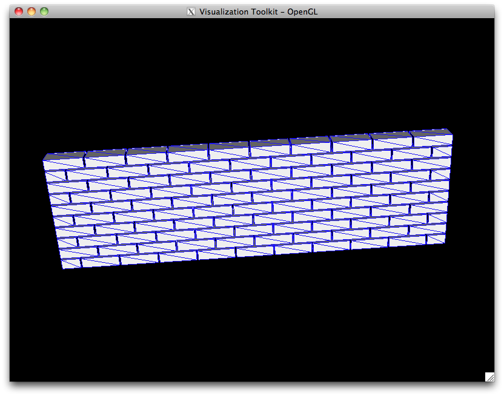

Masonry¶
This section details the pre-processing functions dedicated to masonry structures. Here are provided two types of function, those generating bricks, and those using the bricks to generate a wall. After that is up to the user to put together the walls so that they fit.
Brick generation¶
Two classes have been designed for brick creation: pre.brick2D, and pre.brick3D.
The only inputs for these class are a name and the sizes of the brick.
But the brick object is not an avatar yet, it merely defined its geometry.
To obtain usable avatar(s), one of the three following methods has to be used for 2D bricks:
to obtain a rigid avatar:
pre.brick2D.rigidBrickto obtain a continuous deformable avatar:
pre.brick2D.deformableBrickto obtain an exploded deformable avatar (each mesh element being one avatar)
pre.brick2D.explodedDeformableBrick
Concerning the obtained deformable avatars, each brick has CLxxx contactors on the
lower and right sides and ALpxx on the upper and left sides.
To obtain 3D rigids either the pre.brick3D.rigidBrick method is available in 3D
bricks, or the extrusion functions can be used on the avatar(s)
generated with the 2D bricks.
Example:
Creation of 2D brick:
dim = 2
lx = 0.1
ly = 0.05
brick = pre.brick2D('std_brick', lx, ly)
{kind=link}
Creation of a row of rigid bricks:
nb_bricks = 12
bodies = pre.avatars()
mat = pre.material(name='PLEXx',materialType='RIGID',density=2000.)
mod = pre.model(name='rigid', physics='MECAx', element='Rxx2D', dimension=dim)
for i in range(nb_bricks):
bodies += brick.rigidBrick(center=[i*lx, ly/2.], model=mod, material=mat, color='BLUEx')
Wall generation¶
The pre.paneresse_simple and pre.paneresse_double classes
allow to automatically generate simple walls without openings with regular
rigid bricks. The appealing side of these classes is that all the troubles
due to the “harpage” is taken care of automatically. The only things left
is to write the visibility tables.
Otherwise the governing idea of wall generation is to define several brick objects. Make a list of bricks to make a row and a list of rows to make a wall. Then the avatars which defined the wall are built through nested loops in a similar way than in previous example.
Example:
{kind=link}
Generation of a 3D wall of rigid bricks in “paneresse simple” configuration:
dim = 3
mat = pre.material(name='PLEXx',materialType='RIGID',density=2000.)
mod = pre.model(name='rigid', physics='MECAx', element='Rxx3D', dimension=dim)
simple_brick = pre.brick3D(name='brique simple', lx=0.22, ly=0.11, lz=0.06)
wall = pre.paneresse_simple(brick_ref=simple_brick, disposition="paneresse")
wall.setFirstRowByLength(first_brick_type="1/2", length=2.3, joint_thickness=0.01)
wall.setNumberOfRows(10.)
wall.setJointThicknessBetweenRows(0.01)
wall.computeHeight()
bodies = wall.buildRigidWall(origin=[0., 0., 0.], model=mod, material=mat, colors=['BLUEx', 'REDxx'])
For the generation of 2D wall or rigid bricks with different bricks and openings,
see this complete example.
{kind=link}